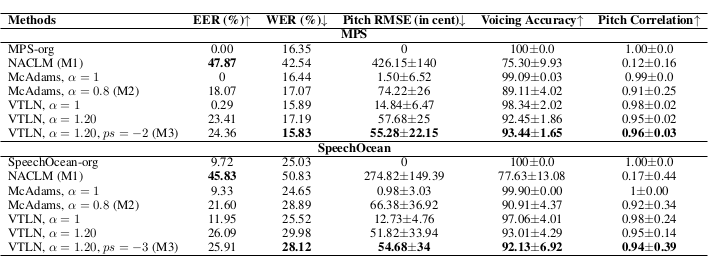

Accepted at the Symposium on Educational Advances in Artificial Intelligence (EAAI-26)
Speaker Anonymization for Children’s Oral Reading Assessment
Table 2 from the manuscript is reproduced here together with audio examples for methods M1, M2, and M3.

MPS Dataset (M1, M2, M3 from Table 2)
Original
NACLM
McAdams α = 0.80
VTLN α = 1.20, ps = −2
SpeechOcean Dataset (M1, M2, M3 from Table 2)
Original
NACLM
McAdams α = 0.80
VTLN α = 1.20, ps = −3
The following sections present a detailed analysis of the speech samples obtained from each method in Table 2
Effect of Analysis–Synthesis
This section presents speech samples obtained with VTLN and McAdams methods at α = 1 to analyze how their analysis–synthesis process affects the speech samples, without any formant shift.
MPS Dataset
Original
VTLN α = 1
McAdams α = 1
SpeechOcean Dataset
Original
VTLN α = 1
McAdams α = 1
Observations
At α = 1, McAdams synthesis is exact.
Moderate distortion is observed in the VTLN reconstructed samples due to the WORLD vocoder–based analysis–synthesis.
The perceived speaker identity is not altered by the analysis–synthesis.
Effect of Spectral Warping
This section presents speech samples at α = 0.80 and α = 1.20 for both VTLN and McAdams methods to illustrate the effect of spectral warping on anonymization.
MPS Dataset
Original
VTLN α = 0.80
VTLN α = 1.20
McAdams α = 0.80
McAdams α = 1.20
SpeechOcean Dataset
Original
VTLN α = 0.80
VTLN α = 1.20
McAdams α = 0.80
McAdams α = 1.20
Observations
At α = 0.80 and 1.20, the VTLN and McAdams methods lead to noticeable anonymization of speaker identity.
At the lower value α, the speech becomes more child-like, whereas at the higher value, the transformation produces a more adult-like voice.
For VTLN at α = 0.80, the resulting voice sounds unnatural since children’s voices already have higher formant frequencies, and further upward shifting causes noticeable distortion.
Effect of Pitch Shift
This section presents speech samples to analyze the effect of positive and negative semitone shifts on anonymization.
MPS Dataset
Original
VTLN ps = −2
VTLN ps = +2
SpeechOcean Dataset
Original
VTLN ps = −3
VTLN ps = +3
Observations
Pitch shifts of +2/+3 and −2/−3 significantly anonymize speaker identity. Positive shifts raise the pitch, while negative shifts lower it, making the voice sound more adult-like.
With a positive semitone shift, particularly in the SpeechOcean dataset, the samples sound unnatural because children’s speech is already high-pitched, and further raising it makes the voice less natural.
Combined Effect of Pitch Shift and Spectral Warping
This section presents the combined effect of positive and negative semitone shifts and spectral warping (α = 1.20) on anonymization.
MPS Dataset
Original
VTLN α = 1.20, ps = +2
VTLN α = 1.20, ps = −2
SpeechOcean Dataset
Original
VTLN α = 1.20, ps = +3
VTLN α = 1.20, ps = −3
Observations
Pitch and formant shifts (change in spectral warping factor) together result in significant anonymization, clearly evident from the samples.
Negative semitone shift + spectral warping (α > 1) makes the voice more adult-like with minimal impact on naturalness, while a positive semitone shift makes it more child-like but reduces naturalness.